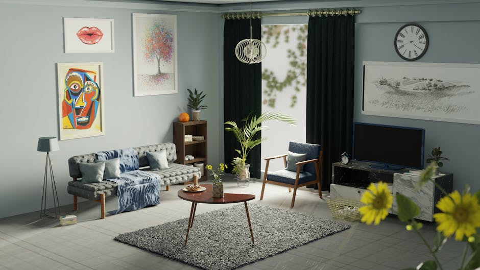

Generated Images
Theme: Your "normal" day is someone's dream. So be thankful.

Prompt 1:
A young woman, Sarah, lies asleep in a cozy bedroom, bathed in soft morning sunlight. Her alarm clock rings, casting a harsh light across her face.
Prompt 2:
**Image Prompt:**
Oil painting of a room with warm golden light pouring in through a large window. In the foreground, Emma, a young woman in a wheelchair, gazes out the window with an expression of longing. Behind her, Sarah, another young woman, is getting dressed, her movements full of vibrancy and freedom. Focus on the contrast between Emma's stillness and Sarah's動感. Use soft, muted colors and a painterly style.
Prompt 3:
A young woman, confined to a wheelchair and looking on longingly at another young woman, who is standing by the window of a cozy room. The room is filled with warm, golden light from the setting sun. The night sky behind the standing woman is indigo, with a scattering of stars. The style is realistic, with a slightly somber mood.

Prompt 4:
Colorful, anime-style depiction of a bright room where Sarah goes about her morning routine, full of freedom of movement, juxtaposed with a shadowy, muted room where Emma lies in bed, watching Sarah through a window.
Prompt 5:
Create an image of two side-by-side rooms. On the left, Sarah rests in a cozy bed, soft lamplight illuminating her serene face. To the right, Emma sits up in her bed, wide-eyed with wonder, gazing out a window at the twinkling night sky and the distant lights of Sarah's town. Warm, soft colors and a painting-like style.
Prompt 6:
Create a serene artwork depicting a bedridden girl, Emma, gazing wistfully out her window at a young woman, Sarah, walking home from work. The image should evoke the contrast between Emma's longing for freedom and Sarah's mundane routine, with soft, subdued lighting and a focus on the characters' body language and facial expressions.